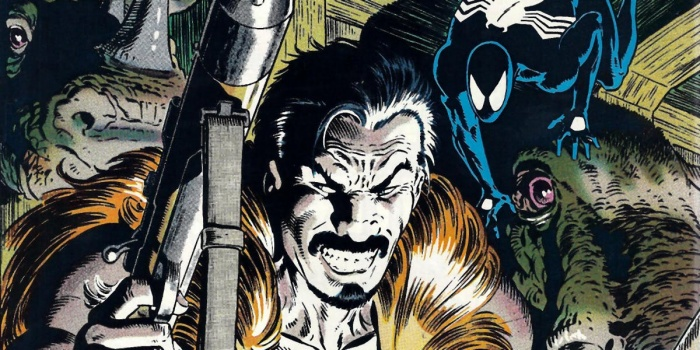

FRIENDLY NEIGHBORHOOD
- INICIO
- PERSONAJES
LA ULTIMA CACERIA DE KRAVEN

Spider-man: La última cacería de Kraven es uno de los cómics más importantes de Spider-man. Obra de J.M De Matteis y Mike Zeck es un punto y aparte de este héroe de Marvel. Un imprescindible que cualquier aficionado a las viñetas debería leer alguna vez en su vida.
Spider-man: La última cacería de Kraven es un arco argumental publicado en Estados Unidos en 1987, poco tiempo después de la boda de Peter Parker y Mary Jane Watson (sentimos el SPOILER, pero Pete y MJ estuvieron tiempo atrás casados y fue un bombazo y todo un evento en su momento). La obra se publicó en distintos números de las series Amazing Spider-man, Web of Spider-man y Peter Parker: The Spectacular Spider-man, las tres colecciones que en aquel momento servían de escenario a las aventuras del héroe.
A lo largo de seis actos, descubríamos que el villano Kraven "El Cazador" se moría. Debido a esto decidía poner fin a sus cacerías a la desesperada. Por ello, optaba por llevar la caza de Spider-man a un nuevo y perturbado nivel, no contentándose solo con cazarle, sino con usurpar su traje y convertirse en él. En su locura, Kraven trataba de restaurar "su honor", mediante la superación personal, demostrándole al Trepamuros su superioridad moral y física. Y estaría dispuesto a llegar hasta extremos que jamás había cruzado. Pero hasta ahí os contamos, no os queremos decir más de su trama, aunque antes os relatemos un par de curiosidades.

Una obra maestra, de terrible simetría...
Durante mucho tiempo, Spider-man: La última cacería de Kraven respondió al antetítulo de Terrible simetría, en referencia al poema El Tigre de William Blake, estableciendo un cierto paralelismo entre la presa y el cazador. Y es que la idea de la historia es acerca de Peter Parker y su propia naturaleza dual como hombre y como araña, pero también el problema de Kraven, su necesidad de significarse y de sentir que ha hecho algo con su vida y que no la ha malgastado.
En este sentido, la obra resulta impresionante ya que en primera instancia explora la madurez de un Spider-man de los años 80, que ha tenido que ser testigo de numerosas atrocidades en torno a él, de una pérdida de la inocencia que le rodeaba, que se saldó con la muerte de Ned Leeds, acusado falsamente de ser el villano conocido como el Duende. Pero aunado a esto se encuentra el cambio de rol en el que se encontraba en ese momento, como hombre recién casado, cuya muerte o desaparición ahora afectaría también a una esposa.
En esta misma línea, la obra desgrana los problemas humanos de Spider-man, posiblemente el héroe psicológicamente más realista de Marvel, debido a sus problemas REALES (familia, facturas, trabajo mal pagado, etc...), mostrando sus miedos, debilidades, y demás fobias, sin llegar a entrar ni siquiera en el rollo del Tío Ben, repetido ad nauseam en cómics, series y películas. De esta manera, nos muestra a un héroe que sangra, sufre y que trata de mantener su identidad a pesar de todo.
Pero, ojo, que el antagonista, Kraven también queda revelado en esta obra que le hace trascender más allá de su rol de villano arquetípico de los años 60/70, con su chaleco colorido y su taparrabos de leopardo. La obra nos muestra a un hombre torturado, insatisfecho y anacrónico que ha tenido que encontrar cordura en el salvajismo y en los instintos más primarios, ya que la sociedad del siglo XX no es para él. En este sentido, la obra pone en contexto su obsesión con Spider-man, explicando sus motivaciones y métodos, obligándonos a empatizar con él, entendiendo sus motivaciones. En esta línea, la obra hace algo que pocos cómics han hecho con los villanos: desobjetivarlos, dotándolos de humanidad, permitiéndonos ver su punto de vista e incluso (casi al límite) disculparlos.
De ahí que la simetría entre Spider-man y Kraven quede reflejada cuando ambos se convierten en uno y ambos deben medirse cara a cara, entiendo lo que siente el otro y, en parte, entrando en las carnes de su enemigo. Todo esto, a su vez se elabora en torno a un tercer pilar que es el villano Alimaña, una criatura caníbal también afectada por su propia dualidad.
Por otro lado, tampoco hemos de perder de vista al dibujante Mike Zeck, responsable de las Secret Wars originales y de Círculo de Sangre, uno de los mejores cómics del Punisher. El autor realiza un trabajo de narrativa y de ilustración impecable, limpio, profundo y trabajado. La anatomía es casi perfecta, las expresiones de los personajes tremendamente naturales y los entornos y escenarios magistrales. Y eso sin hablar del trabajo de perspectiva y la riqueza de planos que nos brinda y que las tintas de Bob McLeod saben resaltar tan bien.
No obstante, y a pesar de lo dicho, os invitamos a leer este cómic, que de seguro no os defraudará. Ya seáis neófitos o lectores veteranos, ya que en cualquier de los dos casos os asombraréis ante esta grandísima historia.